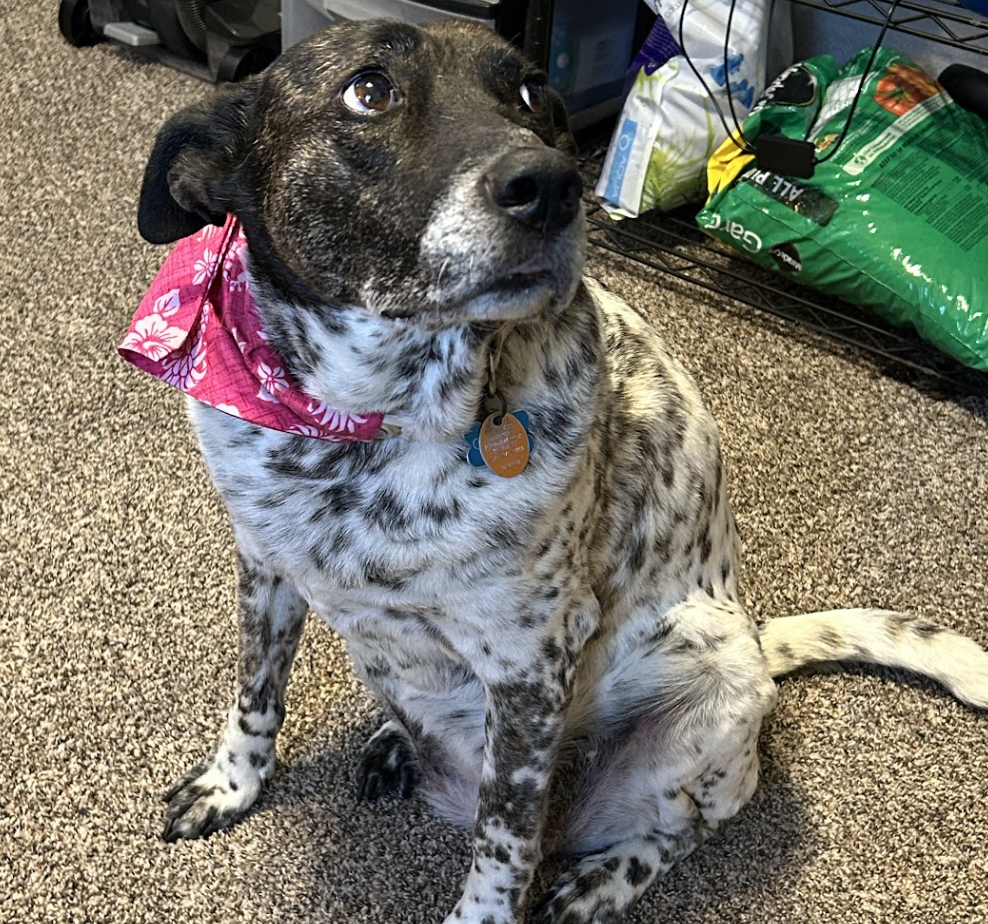

My name is Jade. I'm a web developer and software engineer.
I have been coding for almost two years. Before that I went to school for game development, specifically art and 3D modelings for games.
Before college, I was a cook and freelance graphic designer. I used to work in various restaraunts and food establishments, including private jet catering.
I live in Austin, Texas with my partner of 6 years, David, and our dog, Cheena who has been a member of the family for 10 years.
Detail-oriented and self-motivated administrative professional with hands-on experience in inventory management, retail analytics, and marketing. Proven ability to improve efficiency, streamline systems, and support cross-functional teams through strong organization, process documentation, and data analysis. Skilled in inventory software, reporting tools, and remote collaboration platforms. Known for taking initiative, solving operational bottlenecks, and contributing to smoother daily workflows. Seeking a remote role in operations, administration, project management, or data analysis where organization, attention to detail, and execution are key.